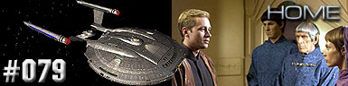
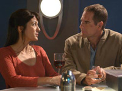
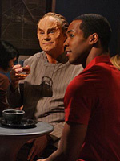
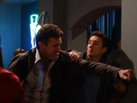
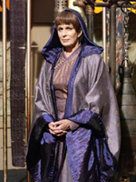
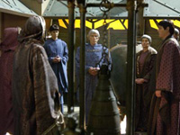
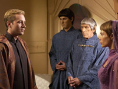

|
Enterprise
Temporada 3

Anlise do episdio por
Salvador Nogueira



|
MANCHETE
DO EPISDIO |
Almirante Forrest recepciona Archer e seu snior staff em uma demonstrao triunfal em So Francisco, e o Capito da Enterprise discursa para uma grande multido, lembrando que diversos tripulantes seus tombaram no cumprimento do dever, e que bom estar de volta ao lar.

Entrementes, outros tripulantes tambm esto com atividades. T'pol est arrumando malas para uma viagem a Vulcan, enquanto Trip decide o que fazer antes de voltar a supervisionar o processo de refit na Enterprise; com a cidade de sua irm destruda no primeiro ataque Xindi, ele no tem muitas opes para escolher. T'pol o convida para passar algum tempo l, na casa de sua me, e o engenheiro aceita o convite depois de ponderar um pouco a respeito.
Dia seguinte, e Archer participa do debriefing da misso, com Forrest e o Embaixador Vulcano Soval, entre outros. Soval questiona algumas decises de comando de Archer durante os eventos em que encontraram uma nave vulcana na Expanso Dlfica, e Archer se mantm por sua deciso, afirmando que no havia como salvar os vulcanos j em estgio avanado de contaminao, segundo Phlox. Soval pressiona mais Archer, que no se contm em dar uma rspida resposta ao Embaixador vulcano. Forrest ordena uma suspenso nos processos de debriefing para dar tempo a Archer esfriar a cabea, mas o Capito da Enterprise no considera isto necessrio tanto quanto no considera necessrio ter que se explicar ao Embaixador Vulcano, que segundo Archer, s fez foi atrapalhar a misso. Tempos depois, Archer encontra a involuntria companhia de Erika em um parque nacional, pois segundo a Capito da Columbia, ele sabe bem que no se deve ir escalar sem uma companhia.
Enquanto ajuda Phlox com alguma bagagem para as frias do mdico na Terra, Reed comenta a respeito de alguns incidentes xenofbicos na Terra, pois segundo parece, toda a crise Xindi deixou partes da populao do planeta mais sensvel a aliens. Apesar de tudo, Phlox no se mostra particularmente preocupado. Em Vulcan, T'pol e Trip chegam na casa da me da vulcana, T'Les, e embora a mulher parea se mostrar mais fria do que Trip poderia esperar ate mesmo de uma vulcana, ela tambm polida e atenciosa. T'pol, contudo estranha ela estar naquela hora do dia na casa, mas ela explica que no est mais trabalhando na Academia de Cincias. T'Les tambm entrega a ela um comunicado do noivo da moa, mas o qual ela considera ex-noivo, posicionamento que sua me coloca em xeque.

T'Pol arranca da cama Trip as quatro da manh, para tambm ajudar a preparar o caf-da-manh, rotina costumeira de convidados em uma casa vulcana. Durante a refeio, a conversa gravita sobre as opes de T'pol dali para frente, se volta para Vulcan, ou aceita um comissionamento na Frota Estelar Terrquea. Uma breve discusso se inicia, mas T'pol no pressiona o assunto para no fazer Trip sentir-se desconfortvel.
Mais tarde, enquanto ajuda a dar um tapa em um dispositivo de cozinha da casa, Trip procura ter uma conversa informal com T'Les. A mulher aproveita a deixa para comentar a respeito do envolvimento romntico dele com sua filha, o que pega o humano de surpresa, mas ela assegura que no era coisa do tipo que escaparia do conhecimento de uma me. O assunto meio morre no ar enquanto Trip ativava o dispositivo que consertara, e Koss, o ex-noivo de T'pol, bate porta. A ss, T'pol pergunta o que faz ali, uma vez que deixara claro para ele na correspondncia que no quer mais nada com ele. Koss considera que esta deciso no apenas deles, e que devem manter as tradies. T'pol comea a procurar tangentes por onde seguir, como dizer que esteve recentemente doente e sabe-se l se ainda esta, e tambm lembra que ela pode apelar para um Knut Kalifee. Koss acha curioso que ela realmente considere esta opo, e especula se Trip seria um adversrio a altura de tal coisa. Antes de ir, contudo, Koss diz que pode ajudar a me dela a voltar ao trabalho, pois segundo ele sabe, ela foi forada a se retirar.
Mais a noite, Erika estranha que Archer questione se eles realmente deveriam ter comeado a explorar o espao da maneira que comearam, e se uma mudana de atitude no seria prefervel, para algo mais defensivo e mais contido em casa. Mais tarde, Archer acordar com barulhos nos rochedos em que passam a noite, e com Erika ainda dormindo, sai para investigar, pistola de fase em punho, e no demora a ele se encontrar lutando e sendo derrotado por dois Xindi. Mas no passava de um pesadelo Archer acorda sobressaltado, com Erika verificando se ele est sentindo-se bem.

Confrontada por T'pol sobre a real natureza de sua "aposentadoria", sua me afirma que caiu sob investigao por supostamente ter copiado informao sensvel dos arquivos da Academia. T'les no fez isto, e especula que tenha sido uma vendetta incentivada pelo fato de sua filha ter tantas atividades com os humanos, especificamente a respeito do incidente que ocasionou na destruio do monastrio de P'jem. T'pol se revolta com tal atitude, o que incita sua me a comentar como as emoes da moa esto facilmente florescendo, o que ela associa ao relacionamento de T'pol com Trip.
Enquanto visitam o Monte Seleya, T'pol comenta com Trip que decidiu se casar com Koss, para isto poder restaurar a posio de sua me perante a Academia. T'pol afirma que a deciso sua e faz isto conscientemente, mas Trip pode ler claramente que algo que ela escolhe por no ver muitas outras opes. T'pol procura racionalizar sua deciso com Trip, mas o engenheiro no compra muito a idia.
Na manh seguinte, Archer parece estar bem mais disposto e animado do que at ento, com eles animadamente comentando sobre eles reatando seu supostamente anterior relacionamento... Erika pergunta porque que teriam parado de sarem juntos, e Archer a lembra que ele era seu oficial superior, o que seria algo inapropriado. Mas, agora ele no mais o superior dela, Erika tambm lembra, alm da ironia de serem os dois Capites das primeiras duas naves de capacidade dobra 5 da Frota.

Dias depois, o debriefing parece terminar em um tom muito mais adequado. Archer se desculpa com Soval pela sua reao anterior, e o Embaixador admite que, embora possa ter tido reservas a indicao de Archer para comandar aquela misso, esta deciso se mostrou bastante correta, e o congratula e agradece pelos servios prestado a ambos os seus mundos, e ambos trocam um aperto de mos.
Preparando-se para a cerimnia de casamento de T'pol, Trip conversa com T'les. A mulher especula a respeito da deciso de sua filha estar sendo baseada nos costumes de seu povo, e pergunta para Trip se ele j "informara" a ela sobre o amor dele para com T'pol vulcanos no expressam emoes, mas no so cegos a ela, argumenta T'les. Trip diz que naquele momento est realmente sentido que perde a vulcana, mas que acabou no podendo realmente expressar tudo o que sente por ela. Para a surpresa de Trip, T'les diz que ainda h tempo sua filha precisa tomar suas decises dispondo de toda a informao e fatos disponveis, uma maneira bastante vulcana de encarar o que est prestes a propor para o humano, mas Trip diz que no quer complicar a vida da vulcana ainda mais do que j est. Na cerimnia, T'pol agradece a presena de Trip (vestido como vulcano com roupas do marido de T'les), e a cerimnia prossegue, mas no antes de T'pol passar pelo humano lhe dando um beijo no rosto.
Comentrios:  
Depois da montanha-russa de "Storm
Front", "Home" um episdio mais
que bem-vindo. quase um terceiro piloto para a srie (sintomtico
da perda de audincia a cada temporada). Est contando? O
primeiro foi "Broken Bow",
a estria de Enterprise. O segundo, "The
Expanse", ltimo episdio do segundo ano, que deu
incio ao arco Xindi, que perdurou por toda a terceira temporada.
"Home" o terceiro.
Archer um homem torturado. Aclamado por todos os humanos como o
"salvador da ptria", ele se v sob um ngulo muito
menos favorvel. Um indivduo que colocou seus princpios de
lado para cumprir sua misso. Ele est totalmente descrente no
conceito de explorao pacfica do espao, depois de trs
anos trocando farpas com aliengenas l fora.
Por isso, "Home" to interessante do ponto de
vista dele. Ao colocar Archer em contato com Hernandez, uma
ex-namorada e agora promovida a capit da Columbia (NX-02),
segunda nave construda com o motor de dobra cinco, podemos ver o
contraste entre o explorador pacfico e esperanoso e o homem cnico
e prtico, calejado por encontros com Sulibans, Klingons,
Andorianos, Vulcanos, Xindis...
Nesse processo de desenovelamento do personagem, algumas cenas se
destacam como clssicas. A que mais marca o "debriefing"
do capito, em que Archer pressionado por Soval e perde
totalmente o controle, lembrando o quanto ele pode se ressentir
dos Vulcanos, a despeito de sua convivncia com T'Pol.
E a cena final, em que Soval cumprimenta o capito, ajuda a reforar
essa sensao de trauma/incompreenso, muito mais do que legtima
animosidade, entre humanos e Vulcanos.
Para fechar a conta, os personagens secundrios fazem um papel do
mesmo tipo: secundrio. Sua funo meramente consiste em
mostrar o clima de xenofobia que ficou na Terra aps o ataque
Xindi. Alm de oferecer comentrio social relevante aos tempos
atuais, a srie apresenta elementos que tambm devem ser mais
bem explorados no futuro.
Como destaque da produo fica o sensacional efeito especial da
cara inflada de Phlox. Pode no ter sido particularmente
importante para a histria, mas no se pode negar a qualidade tcnica
da tomada.
No fim, "Home" o que promete ser: uma volta
para casa. Quem sabe agora, embalada com um sentido de prlogo da
Srie Clssica mais intenso, Enterprise no
engata uma quinta e entrega tudo o que prometeu aos fs em sua
premissa original?
Archer - "This planet would
be a could of dust right now if wed have listened to you. We got more
help from the Andorians!"
("Este planeta seria uma nuvem de poeira bem agora se ns tivssemos
escutado voc. Tivemos mais ajuda dos Andorianos!")
Archer - "You end up spending most of your time boldly going
into battle."
("Voc acaba gastando boa parte do seu tempo audaciosamente
indo para a batalha.")
T'Les - "Do you really believe a Vulcan and a human could have a
future? Imagine the shame your children would have to endure"
("Voc realmente acredita que uma vulcana e um humano possam
ter um futuro? Imagine a vergonha que suas crianas teriam que
enfrentar.")
Tucker - "Sorry? You bought me 16 light years to watch you marry
some one you dont even know?"
("Desculpe? Voc me trouxe 16 anos-luz para assistir voc se
casar com algum que voc sequer conhece?")
 Sobre o segmento, Dominic Keating comentou que "nossos heris
finalmente podem constatar como o mundo deles mudou aps o ataque Xindi
Florida no final do segundo ano".
Sobre o segmento, Dominic Keating comentou que "nossos heris
finalmente podem constatar como o mundo deles mudou aps o ataque Xindi
Florida no final do segundo ano".
 Jack Donner, que interpretou o Sacerdote vulcano que realiza o casamento
de T'pol e Koss, tambm um alumni da Srie Clssica. O ator
interpretou o Subcomandante romulano Tal no episdio "The
Enterprise Incident".
Jack Donner, que interpretou o Sacerdote vulcano que realiza o casamento
de T'pol e Koss, tambm um alumni da Srie Clssica. O ator
interpretou o Subcomandante romulano Tal no episdio "The
Enterprise Incident".
Escrito por Michael Sussman
Direo de Allan Kroeker
Exibido em 22/10/2004
Produo: 079
Elenco:
Scott
Bakula como Jonathan Archer
Jolene Blalock como
T'Pol
John Billingsley
como Phlox
Anthony Montgomery
como Travis Mayweather
Connor Trinneer como
Charlie 'Trip' Tucker III
Dominic Keating como
Malcolm Reed
Linda Park como Hoshi Sato
Elenco convidado:
Joanna Cassidy
como T'Les
Michael Reilly Burke
como Koss
Ada Maris como Capito Erika Hernandez
Gary Graham como Soval
Vaughn Armstrong
como Almirante
Forrest
Joe Chrest como Cliente do Bar #1
Jim Fitzpatrick
como Comandante
Williams
Jack
Donner como Sacerdote
Vulcano
Sinopse, trivias e ficha
tcnica por Leandro
M.Pinto
Episdio
anterior | Prximo
episdio